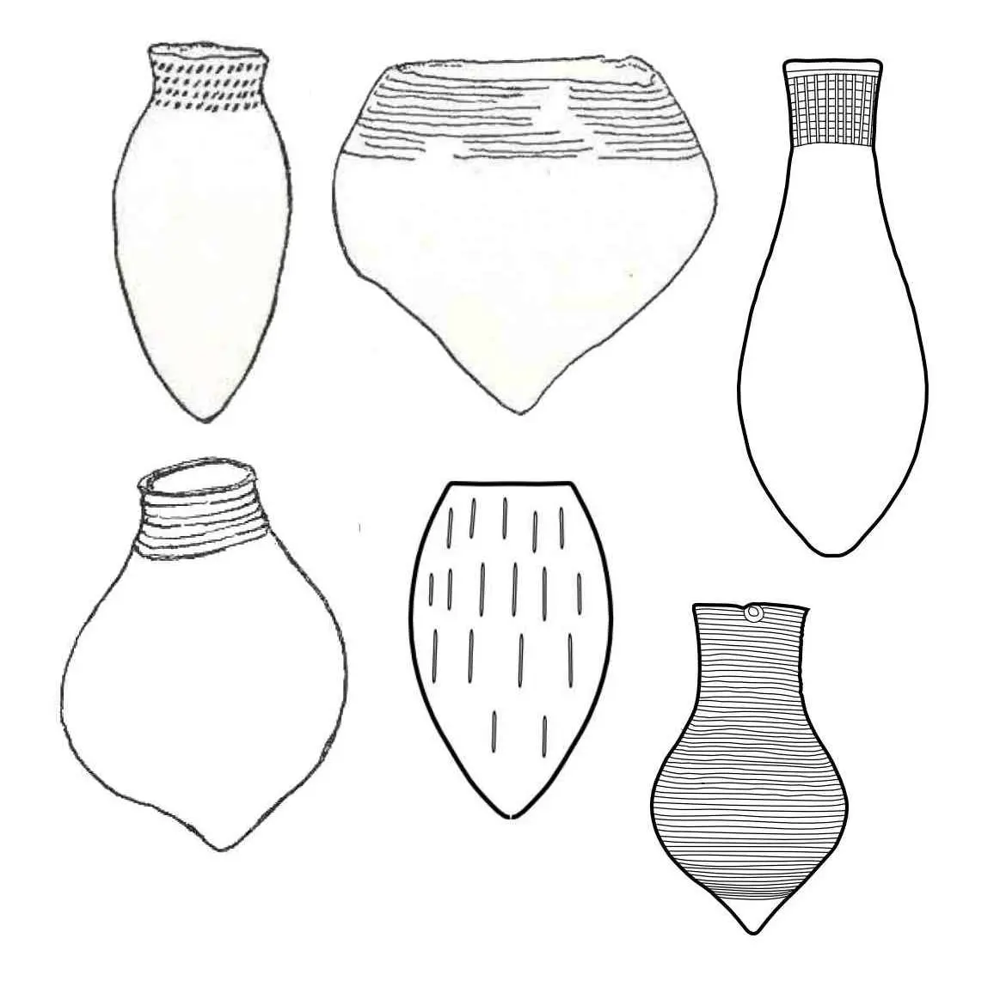
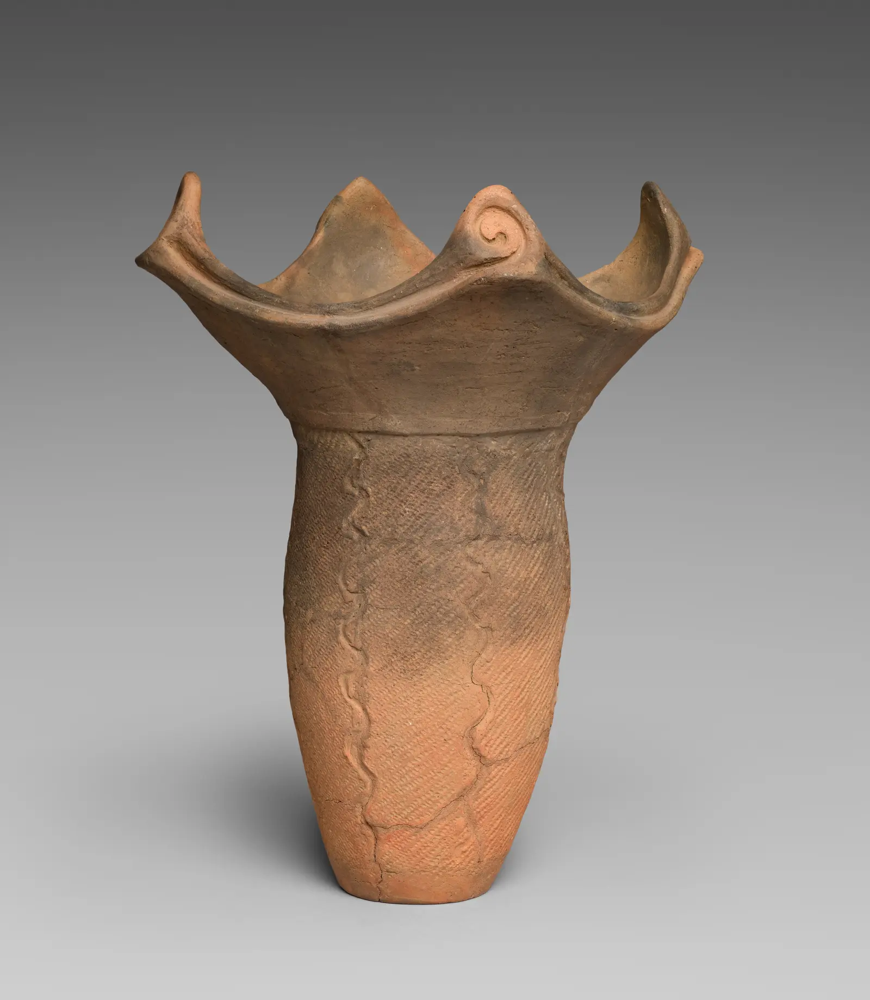
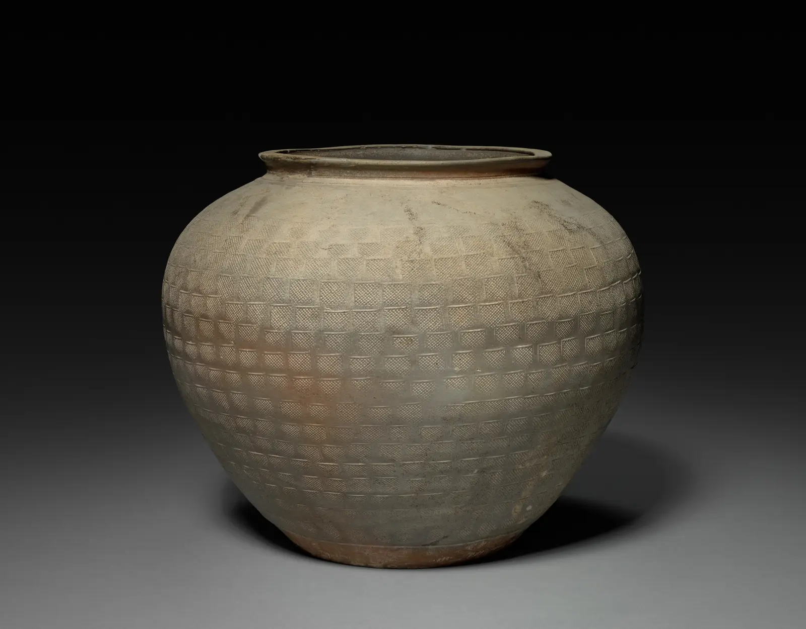
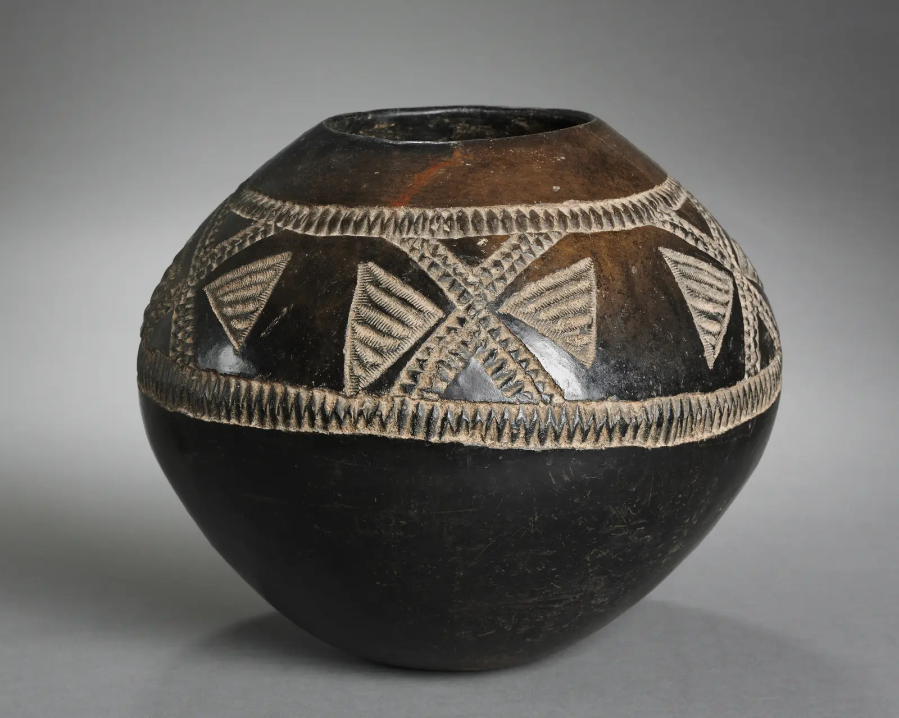

{kind=link}
Prerequisite
Control pinch-built walls and recognize workable versus leather-hard clay.
Phase 03 · 7–10 hours
Build upward without asking wet clay to carry more than it can. Treat every vessel as a load path, every seam as a relationship, and every pause as a structural decision.

Aim
Control pinch-built walls and recognize workable versus leather-hard clay.
Join coils securely, stage construction, steer profiles, and diagnose cracking, slumping, and twist from evidence.
Seam samples, a profile triptych, a load test, and one 30–40 cm vessel with a failure atlas.
At what point does another coil stop adding height and start causing collapse?
Add a coil, integrate it through the wall, establish the intended profile, equalize moisture and thickness, then pause when the lower wall begins to yield.
New mass travels downward. Bulging, shine, soft ripples, or an ovalizing foot show that the base is losing stiffness. Support, stop, and let moisture equalize—do not hide the warning with more clay.

A coil may stick yet remain a separate ring. Blend enough material across the boundary to create a continuous wall while preserving the thickness and surface language you want.
Admiralty Island pottery construction, public domain. Source
Make six joined strips. Vary only one condition at a time: equal versus mismatched moisture; dry contact versus minimal slip; light versus firm compression. Label each.
| Evidence | Interpretation | Correction |
|---|---|---|
| Crack follows coil line | Boundary remained weak or moisture differed | Match state; improve intimate contact and compression. |
| Wall thins beside seam | Integration displaced too much clay | Support opposite side; use shorter strokes. |
| Horizontal ridge | Coil attached but not consolidated | Bridge material across boundary, then recompress. |
Place a coil inside the previous wall to narrow, centered to rise, or slightly outside to widen. This is a planning heuristic, not a substitute for supporting and compressing the join.
Widen gradually; track base stability and avoid a sudden shelf.
Hold a near-vertical load path while resisting twist.
Bring coils inward while supporting from inside; preserve access and rim control.
Make three 15 cm studies from equal clay. Photograph every three courses. Annotate placement, pressure direction, and rest points.
Inspiration · look comparatively
Compare a dramatic rim, a large load-bearing body, and a stone-smoothed silhouette. Each uses coiling differently, as documented by the museum records.



Knowledge check · 3 questions
Choose one answer for each situation. Open a hint when needed; explanations appear after you check all three.
Phase checkpoint · 15 points
| Criterion | 1 | 2 | 3 |
|---|---|---|---|
| Structural continuity | Seams or wall fail | Continuous wall | Thickness supports load and profile |
| Pacing | Build outruns clay | Rest points respond to evidence | Pacing is documented and anticipatory |
| Profile | Unintended drift | Planned changes read clearly | Transitions are controlled and lively |
| Diagnosis | Generic explanation | Evidence linked to cause | Competing causes tested |
| Documentation | Incomplete | Usable build log | Log supports the next iteration |
{kind=link}